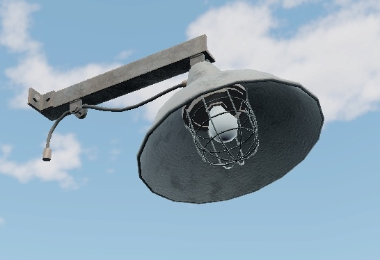
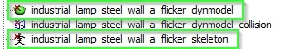
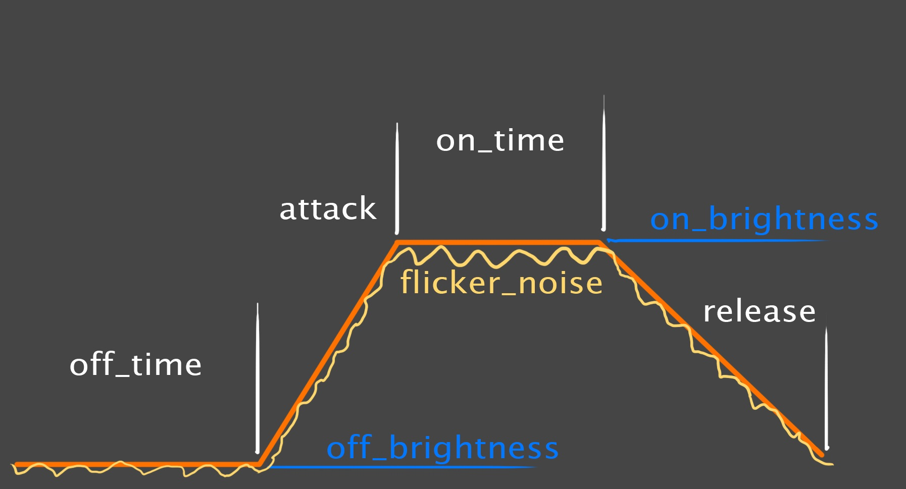
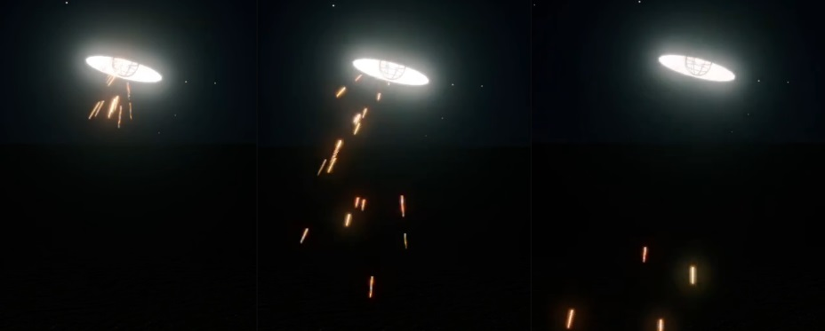

Flickering Lights
General Workflow
A flickering light source object is composed of several components.
Object Type |
Naming Template |
Description |
|---|---|---|
| Base RendInst | industrial_lamp_steel_wall_a.lod**.dag | This is the model used as the base for creating a flickering lamp. In some cases, it may not be required, especially if you are designing a lamp from scratch with built-in flickering functionality. |
| RendInst without Emissive | industrial_lamp_steel_wall_a_base.lod**.dag | A detached part of the
object without any emissive properties, exported as a separate render
instance.
This is necessary for:
Simply put, when the render instance is destroyed, the dynamic model disappears, the light source is removed, and the render instance breaks apart via the destructor. |
| DynModel with Emissive | industrial_lamp_steel_wall_a_flicker_dynmodel.lod**.dag | A detached part of the overall model, exported with a dynamic glowing shader. Essentially, this is the part that will glow and flicker. |
| AnimChar | industrial_lamp_steel_wall_a_flicker_char.animChar.blk | A simple .blk file that
contains references to the dynamic model and its skeleton. Technically, this
is necessary because we cannot place a dynamic model directly on the map, as
it's not a static object. However, placing an animChar is possible.
Example:
|
| GameObj (Flickering Light) | industrial_lamp_steel_wall_a_flicker_8m_light.gameObj.blk | A .blk file containing the
name of the light source template from lights.blk file in the
|
| GameObj (Flickering DynModel) | industrial_lamp_steel_wall_a_flicker_8m_mesh.gameObj.blk | A .blk file containing the
name of the light source template from lights.blk file in the
|
| Composite | industrial_lamp_steel_wall_a_flicker_8m_cmp.composit.blk | This composite.blk file
includes:
|
| Flicker and Light Source Templates
(All templates are located in lights.blk file in the |
industrial_lamp_steel_wall_a_flicker_8m_template | Flicker Template. Defines the flicker parameters. |
| industrial_lamp_steel_wall_a_flicker_8m_light | Flickering Light Source Template. Links the light source to the flicker behavior (you can use a ready-made light source or make your own). The file has the same name as the industrial_lamp_steel_wall_a_flicker_8m_light.gameObj.blk file. | |
| industrial_lamp_steel_wall_a_flicker_8m_mesh | Flickering Dynamic Model Template. Links the dynamic model to the flicker behavior (via AnimChar). The file has the same name as the industrial_lamp_steel_wall_a_flicker_8m_mesh.gameObj.blk file. |
Important
Pay attention to the file name postfixes highlighted in the text, for example: industrial_lamp_steel_wall_a_**flicker_8m_light**. Please follow the same
naming conventions for your files and templates.
Working with Geometry
For flickering light sources, the visual model must be divided into two parts: the Render Instance and the Dynamic Model. The reasons for this have already been outlined:
Shadow Casting:
Shadow casting for light sources from static models and dynamic models is enabled separately in the light source template. While shadows from static objects impact performance, the effect is not as significant. However, shadows from dynamic models are very computationally expensive. That is the reason why they are rarely used. If the entire light fixture is made into a dynamic model, the light source inside it will not cast a shadow on the fixture.
Destruction:
The render instance is replaced with a destructible version when destroyed. This is a straightforward mechanism. In contrast, substituting the entire lamp dynamic model with a broken version involves a new, more complex pipeline, which isn’t practical. Therefore, we destroy the dynamic model alongside the render instance. In this case, the dynamic model simply disappears, and the destroyed render instance is replaced with a damaged version of the dynamic model’s section, broken as necessary.
Important
If you’re creating rare lamps that will be placed in around 10 locations on the map and need to always flicker, follow the pipeline outlined in this article.
If you’re creating lamps that will be used extensively across the map, with only a few needing to flicker, follow this approach:
Create a standard render instance with emissive properties for the majority of placements.
Separately, create the flickering lamps using the current pipeline.
For example, for the current lamp, you’ll have two distinct objects:
industrial_lamp_steel_wall_a_on.lod**.dag– a render instance of the constantly illuminated lamp.industrial_lamp_steel_wall_a_flicker_8m_cmp.composit.blk– a composite file for the flickering lamp.
The example used here is the lamp industrial_lamp_steel_wall_a:

RendInst + DynModel (Geometry Splitting)
A practical splitting between the render instance and the dynamic model is as follows:
Dynamic Model: Contains the bulb and part of the lamp that uses a lightmap with an emissive intensity mask in the alpha channel of the texture.
Render Instance: Includes everything non-emissive and elements that cast interesting shadows, such as the protective bulb net. While the protective net could be part of the dynamic model (since it is illuminated), this would result in flat, uninteresting shadows. The net adds variation and depth to the shadow.
{kind=link}
{kind=link}
Important
To prevent de-synchronization between the matrices of the dynamic model and the
render instance, their pivots must align (positioned correctly in the scene
before exporting to .dag files). In the image above, they are shown side by
side for demonstration purposes only.
Naming of Exported Objects
For an object initially named industrial_lamp_steel_wall_a.lod**.dag, the
split render instance and dynamic model should be named as follows:
RendInst:
industrial_lamp_steel_wall_a_base.lod**.dag– the non-emissive base, to which the rest is added.Dynamic Model:
industrial_lamp_steel_wall_a_flicker_dynmodel.lod**.dag– the flickering dynamic model.
Shaders
RendInst: Uses standard shaders based on the asset creation technology.
Dynamic Model: Uses a dynamic emissive shader, typically the dynamic_emissive shader.
Destructions
As mentioned earlier, destruction is only applied to render instances. Since destroying dynamic models is more complex, both the dynamic models and light sources will simply vanish when the associated render instance is destroyed, as long as they are within its bounding box.
Important
“Automatic” destruction of lights and dynamic models will only occur under the following conditions:
Their pivots must be inside the bounding box of the destroyed render instance. If they merely touch the edge, destruction will not occur.
The property
destroyable_with_rendinst:tag{}must be specified in their templates. Most lights (99%) inherit this property from their base templates, so it typically doesn’t need to be added manually. However, for each new dynamic model, you must include this property in the template, such as inindustrial_lamp_steel_wall_a_flicker_8m_mesh.
To properly configure destruction, you only need to:
Create a standard
_destrfor the render instance.Define the render instance destruction in
rendinst_dmg.blkaccording to standard guidelines.
Important
When destroying the render instance, the entire model must be affected, meaning the destruction process must cover both the static and dynamic parts. Otherwise, the dynamic model will disappear abruptly, leaving gaps in the remaining render instance’s geometry.
Here’s the proper destruction process:
Render Instance |
Dynamic Model |
Render Instance Dynamic Model Destruction |
Render Instance Dynamic Model Destruction DMG(optional) |
|---|
{kind=link}
{kind=link}
{kind=link}
{kind=link}
Working with Textures and Materials
Some key considerations:
The emissive mask, which is stored in the alpha channel of the albedo texture based on the rendinst_emissive/dynamic_emissive shader system, should only be baked for the part of the model included in the dynamic model. Flickering is not supported for the render instance.
Therefore, the render instance should not use an emissive shader unless specifically required by the artistic design (e.g., in a sci-fi setting).
Keep in mind that the flickering light source does not account for the light color or the emissive color in the material. You must manually adjust the emissive color to match the desired light color (or vice versa if you’re creating a new light). There is no automatic synchronization between them.
Unless required by the artistic design, avoid baking colored light into the albedo texture. Doing so will restrict the emissive color options for the model (if someone else wishes to use it with a different color). The color and intensity of the emissive effect are controlled in the rendinst_emissive/dynamic_emissive shader settings.
As a result, if you need two identical lamps with different emission colors (e.g., white and red), you must create two separate dynamic models with different emissive material settings. This won’t be possible if the emissive color is baked into the albedo.
Be aware that the Asset Viewer does not accurately display emissive color and intensity. All testing should be done in-game. Do not rely on the Asset Viewer for accurate results.
Configuring the .folder.blk
If you’re unsure how the system handles .dag files and distinguishes between
dynamic models and render instances, please refer to the following
documentation:
Static Geometry Processing
As usual, follow the standard procedure for processing static geometry. The only
thing to note is that if you’re handling static geometry at the beginning of the
.folder.blk, make sure to exclude dynamic models. Failing to do so will
cause them to be processed incorrectly.
Example:
virtual_res_blk{
find:t="^(.*)\.lod00\.dag$"
exclude:t="_destr\.lod00\.dag$"
exclude:t="_dynmodel\.lod00\.dag$"
className:t="rendInst"
contents{
lod{range:r=12;}
lod{range:r=30;}
lod{range:r=80;}
allowProxyMat:b=yes
}
}
If you process dynamic models first, no exclusion is needed later (since a
resource processed twice will not be handled again). Just remember to remove
unnecessary stopProcessing:b=false flags.
Dynamic Geometry Processing
In Dagor Engine’s logic, a dynamic model is considered a dynamic model if:
It uses dynamic shaders.
It has a skeleton.
We’ve already assigned dynamic shaders in the materials, so now we need to create the skeleton:
virtual_res_blk{ // Skeleton creation block
find:t="^((.*)_dynmodel)\.lod00\.dag$" // Find all LOD00s with the _dynmodel postfix
stopProcessing:b=false // Allows reprocessing of these .dag files in the next block
className:t="skeleton" /* Treat the found assets as skeletons
(extracting data to build a skeleton asset) */
name:t="$2_skeleton" /* Name the skeleton using the dynamic model name ($2)
with a _skeleton postfix */
contents{ // Additional data processing rules
addSkinNodes:b=yes
reduceNodes:b=yes
}
}
virtual_res_blk{ // Dynamic model creation block
find:t="^((.*)_dynmodel)\.lod00\.dag$" /* Find all LOD00s with the _dynmodel postfix
(due to the previous block's stopProcessing:b=false) */
stopProcessing:b=false // Likely a redundant parameter here.
className:t="DynModel" /* Process the found assets as dynamic models
(extracting data to build the dynamic model asset) */
name:t="$2_dynmodel" /* Name the dynamic model as $2_dynmodel
(i.e., dynamic model name with _dynmodel postfix) */
contents{ // Additional data processing rules
lod{range:r=12;} // LOD distances
lod{range:r=30;}
lod{range:r=80;}
ref_skeleton:t="$2_skeleton" // Reference the skeleton created in the previous block
}
}
Important
There may be some confusion regarding the naming of assets. We process objects
with the _dynmodel postfix, then assign two additional postfixes in the
skeleton and dynamic model creation blocks:
_skeleton_dynmodel
This might lead to an expectation of names like:
_dynmodel_skeleton_dynmodel_dynmodel
However, the Asset Viewer shows correct names without the redundant
_dynmodel.

This is due to the search query defined in the
find:t="^((.*)_dynmodel)\.lod00\.dag$" statement.
Had the query been find:t="^(.*_dynmodel)\.lod00\.dag$", the entire dynamic
model name, including _dynmodel, would be treated as the object name ($2). The
query we use ensures that only the inner-most group (i.e., the core object name
without _dynmodel) is treated as the object name.
Collision Processing
As we know, collisions are now processed through file includes like include "#/develop/assets/_ri_collision_lod1.blk". By default, this include will also
affect dynamic models, as it doesn’t exclude them. A logical approach would be
to first include the dynamic model collision block, but dynamic models don’t
handle collisions the same way – they are processed through damage models (DMs).
Thus, a hybrid processing solution is needed:
include "#/develop/assets/_ri_collision_lod1.blk" // Include RenderInst collision processing.
"@override-last"{ // Override parameters from the included file.
"@override:find":t="^(.*)_dynmodel\.lod01\.dag$" // Find LOD01s specifically for dynamic models.
"@override:contents"{gameResPack:t="game_logic.grp"; defCollidable:b=no;} /* Set assembly parameters
for dynamic model collisions.*/
stopProcessing:b=no // Likely a redundant parameter here.
}
include "#/develop/assets/_ri_collision_lod1.blk" // Repeat the RenderInst collision processing include.
This hybrid approach ensures that both the render instances and dynamic models are handled appropriately within the collision pipeline.
AnimChar
Technically, we cannot directly place a dynamic model on the map or use it within the flicker templates we need. However, we can achieve this with an animChar (animated character). Despite the abstract name, it allows us to manage dynamic resources effectively.
In essence, the animChar file lists the dynamic resources that should be applied to a specific animated model (flickering light is simply another form of animation).
For instance, the industrial_lamp_steel_wall_a_flicker_char.animChar.blk
contains the following two lines:
dynModel:t="industrial_lamp_steel_wall_a_flicker_dynmodel" // Dynamic model
skeleton:t="industrial_lamp_steel_wall_a_flicker_skeleton" // Associated skeleton
Place the animChar file alongside the dynamic model, naming it after the model
with the suffix _char.animChar.blk. No additional .folder.blk processing is
required.
GameObjects
Game Objects are essentially placeholders, containers, or dummies with the same name as the related template. They are used to position objects in the environment or to add them to template composites. GameObjects provide the matrix information needed to trigger effects like sound (SFX), visual effects (VFX), game triggers, and light sources.
Typically, GameObjects are stored in a common directory with other GameObjects. In daNetGame-based projects, for example, this would be located at:
/<project_name>/develop/assets/common/gameRes/gameObjects/
We need the following:
industrial_lamp_steel_wall_a_flicker_8m_light.gameObj.blk– This GameObject represents the flickering light source (with an 8-meter radius) and will be placed on the map as a light source. Inside the.blkfile, define:volumeType:t="point"
industrial_lamp_steel_wall_a_flicker_8m_mesh.gameObj.blk– This GameObject represents the flickering dynamic model and will be placed on the map as the dynamic object. Inside the.blkfile, define:volumeType:t="point" ref_dynmodel:t="industrial_lamp_steel_wall_a_flicker_dynmodel"
Important
Make sure to reference the correct dynamic model; otherwise, incorrect resources may be loaded.
Composite Object
To place everything on the map, you’ll need to create a composite object, which will include:
The base render instance
The flickering light game object
The flickering dynamic model game object
Don’t forget to adjust the orientation of the light source based on the lamp’s configuration (usually, lights are directed sideways along the X-axis). Additionally, for optimal visuals, make use of photometric light sources in daNetGame-based projects.
An example composite file for the flickering lamp:
className:t="composit"
node{
name:t="industrial_lamp_steel_wall_a_base:rendInst"
tm:m=[[1, 0, 0] [0, 1, 0] [0, 0, 1] [0, 0, 0]]
}
node{
name:t="industrial_lamp_steel_wall_a_flicker_8m_mesh:gameObj"
tm:m=[[1, 0, 0] [0, 1, 0] [0, 0, 1] [0, 0, 0]]
}
node{
name:t="industrial_lamp_steel_wall_a_flicker_8m_light:gameObj"
tm:m=[[0.961074, 0.27629, 0] [-2.08593e-08, 7.25591e-08, 1] [0.27629, -0.961074, 7.54979e-08] [0.624191, -0.270539, 0.0204315]]
}
Light and Flicker Templates
Flicker sources are defined by templates, similar to light source templates, and
are stored in the lights.blk file within the <project_name>/prog directory. For
example:
<project_name>/prog/gameBase/content/common/gamedata/templates/lights.blk
These templates usually extend from or use base templates found in
light_flicker.blk, which is located in the “global” prog directory:
/prog/daNetGameLibs/light_flicker/templates/light_flicker.blk
These templates define the flickering behavior for light sources and/or emissive intensity for dynamic models using rendinst_emissive/dynamic_emissive shaders.
In general, three templates cover 99% of the cases, and they follow a specific order. Using our current lamp as an example:
industrial_lamp_steel_wall_a_flicker_8m_template– Flicker template that defines flicker parameters (frequency, pauses, emissive intensity, etc.).industrial_lamp_steel_wall_a_flicker_8m_light– Flickering light template, which links a light source (either an existing one or a custom one) to the flicker behavior defined above.industrial_lamp_steel_wall_a_flicker_8m_mesh– Flickering lamp template, which links the flicker template to the dynamic model via the animChar.
The relationship between these templates is as follows:
The flicker template links to:
The flickering light template.
The flickering dynamic model template.
You don’t always need to create new templates from scratch. If you have an appropriate flicker template, you can reuse it by linking it to the required light and dynamic model. However, the flickering lamp template (for the dynamic model) will need to be recreated each time, as it uses specific animChars.
The flicker and flickering light templates can be reused in various combinations and scenarios.
Caution
All templates are named after the lamps they are created for. Reusing templates is possible, but this naming scheme can lead to confusion. It’s up to you to decide whether to recreate all templates from scratch or reuse existing ones (though they may be named after other objects).
Flicker Template
Important
The randomization settings for flickering will apply synchronously to all identical lamps. This means that if you place two identical lamps next to each other, they will flicker randomly but in sync! Each lamp can look very artistic, but the sync flickering may not be desirable almost in all cases.
If you need to place multiple identical flickering lamps in close proximity, create several flicker templates (and corresponding templates) along with multiple composites, then place them randomly.
Let’s review the flicker template for the current lamp
(<project_name>/prog/gameBase/content/common/gamedata/templates/lights.blk):
industrial_lamp_steel_wall_a_flicker_8m_template{
_use:t="light_flicker_with_sparks"
light_flicker__attack_time:p2= 0.01, 0.15 // Transition time from "off" to "on"
light_flicker__on_time:p2= 1, 10 // Duration of "on" state
light_flicker__release_time:p2= 0.75, 1.25 // Transition time from "on" to "off"
light_flicker__off_time:p2= 0.01, 6 // Duration of "off" state
light_flicker__on_brightness:p2= 1.0, 1.6 // Brightness during "on" state, multiplied by light__brightness
light_flicker__off_brightness:p2= 0.0, 0.2 // Brightness during "off" state, multiplied by light__brightness
light_flicker__noise_brightness_on:p2= 0.5, 1.0 // Noise amplitude multiplier during "on" state
light_flicker__noise_brightness_off:p2= 0.0, 1.0 // Noise amplitude multiplier during "off" state
light_flicker__noise_time:r= 17.0 // Noise frequency (per second)
}
This template extends the root template _use:t="light_flicker_with_sparks",
which contains additional parameters, including settings for sparks (covered in
the VFX section).
The key thing to understand about flicker parameter configuration is that each parameter has a minimum and maximum value, and a random value between the two is selected for each cycle. This allows you to create both uniform and highly random flickering patterns.
Overall, the flicker effect is described by the following parameters, which we’ll explore in detail below.

Cycle Elements
light_flicker__attack_time:p2 = 0.01, 0.15: Time required for the light source to transition from the “off” to “on” state. The time, in seconds, for the light source to ignite. With these parameters, each new cycle will take between0.01and0.15seconds.light_flicker__on_time:p2 = 0.01, 0.5: Duration of the “on” state. The time, in seconds, the light source will remain lit.light_flicker__release_time:p2 = 0.25, 0.75: Time required for the light source to transition from the “on” to “off” state. The time, in seconds, for the light source to fade out.light_flicker__off_time:p2 = 0.01, 4: Duration of the “off” state. The time, in seconds, the light source will remain off.
Brightness Control
light_flicker__on_brightness:p2 = 0.6, 1.0: Brightness multiplier during the “on” state. Multiplies the brightness of the base light source or emissive shader when the light is on.light_flicker__off_brightness:p2 = 0.0, 0.1: Brightness multiplier during the “off” state. Multiplies the brightness of the base light source or emissive shader when the light is off.
Additional Micro-Noise
light_flicker__noise_brightness_on:p2=0.25,1.0: Multiplier for low/high noise amplitude when the light is “on”. Multiplies the micro-flickering effect during the “on” state, based on thelight_flicker__on_brightness.light_flicker__noise_brightness_off:p2=0.0,1.0: Multiplier for low/high noise amplitude when the light is “off”. Multiplies the micro-flickering effect during the “off” state, based on thelight_flicker__off_brightness.light_flicker__noise_time:r=50.0: Noise frequency (per second). The frequency of micro-flickering. This value is deterministic and does not involve randomness.
VFX
We can choose from various base templates, which are extended in our implementation. Examples include:
_use:t="light_flicker": Basic template without additional effects._use:t="light_flicker_with_sparks": Adds sparks and sound effects, suitable for indoor lamps._use:t="light_flicker_with_sparks_nightly": Adds sparks and sound effects only during nighttime, which is appropriate for outdoor lights.
The sparks will appear as shown below:

The chance of sparks appearing can be overridden using the parameter
light_flicker__sparksEffectSpawnChance:r=0.3.
Other settings are embedded in the base template light_flicker.blk in the
global program. By default, the envir_sparks_burst_tiny_smoke VFX is used, but
future updates will allow customization of the VFX.
Flickering Light Template (Light Source)
As an example, consider industrial_lamp_steel_wall_a_flicker_8m_light:
industrial_lamp_steel_wall_a_flicker_8m_light{
_use:t="spot_light_little_b"
_use:t="light_flicker_updater_light"
light_flicker_updater__template:t="industrial_lamp_steel_wall_a_flicker_8m_template"
}
This template includes:
_use:t="spot_light_little_b": Inherits the light source. However, you can override the light source parameters as needed. For example:light__max_radius:r=7 light__color:c=208, 191, 152, 255 light__brightness:r=121 light__nightly:b=no
`_use:t=“light_flicker_updater_light”: A required parameter for flickering light source templates. Synchronizes the flickering effect.
light_flicker_updater__template:t="industrial_lamp_steel_wall_a_flicker_8m_template": Points to our flickering settings template from the previous section.
Important
Regarding _use:t="spot_light_little_b"
It’s recommended to create a unique light source for each new lamp. This approach eliminates the need for overrides within the template. Layering extended light sources on top of each other can create issues when trying to modify the settings of a specific light source. You would need to ensure that no other light source is extending it.
Alternatively, instead of extending a light source, you could define it entirely within the current template. However, in this case, the light source would always be tied to the flickering template. Typically, flickering light sources are used to add variation to non-flickering lights. For example, in a hallway with several identical lamps, only some of them flicker. It makes sense to use a single reference light source for both variants.
Flickering Dynamic Model Template
For example, consider industrial_lamp_steel_wall_a_flicker_8m_mesh:
industrial_lamp_steel_wall_a_flicker_8m_mesh{
_use:t="light_flicker_updater_mesh"
animchar__res:t="industrial_lamp_steel_wall_a_flicker_char"
light_flicker_updater__template:t="industrial_lamp_steel_wall_a_flicker_8m_template"
"destroyable_with_rendinst:tag" {}
}
This template includes:
_use:t="light_flicker_updater_mesh": A required parameter for flickering dynamic model templates. Synchronizes the flickering effect.animchar__res:t="industrial_lamp_steel_wall_a_flicker_char": Specifies the animation character for our model. This effectively transmits the flickering effect to the dynamic model.light_flicker_updater__template:t="industrial_lamp_steel_wall_a_flicker_8m_template": Points to our flickering settings template."destroyable_with_rendinst:tag" {}: Specifies that the dynamic model should disappear if its pivot intersects with the bounding box of a destroyed render instance.
Note
All emissive settings of the dynamic model (except for color, likely) will be
overridden by the parameters from the flickering template
(industrial_lamp_steel_wall_a_flicker_8m_template).